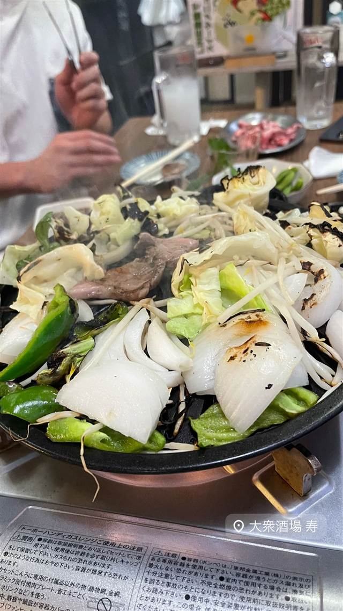

大衆酒場 寿
大衆酒場 寿
REVIEWS
世間の評判
3.13食べログ
良心的な価格とお通しの充実
- 自家製メンチカツなど良心的な価格とコスパの良さを評価する声が多い
- 飲み物注文で付く無限お通しなどサービスの充実を評価する声が多い
- 昼は弁当販売が中心で提供に時間がかかることもあるという声もある
食べログ 口コミ8件
| どこから | 東京から1時間ほど |
|---|---|
| 営業時間 | 月 11:00-14:00 火〜土 11:00-23:00 日 11:00-14:00 |
| 場所 | たまプラーザ 神奈川県横浜市青葉区（たまプラーザ駅周辺） |
| メモ | たまプラーザ駅周辺の大衆酒場（居酒屋） |
食べたもの：野菜炒め鉄板
NEARBY
近い店・同じ系統の店
-
 パスタ たまプラーザ
ItalianLodge TEN（イタリアンロッジ テン）
山小屋風の隠れ家で味わう揚げナスのせ自家製ミートソースパスタ
昼 ¥1,000～¥1,999 夜 ¥4,000～¥4,999
パスタ たまプラーザ
ItalianLodge TEN（イタリアンロッジ テン）
山小屋風の隠れ家で味わう揚げナスのせ自家製ミートソースパスタ
昼 ¥1,000～¥1,999 夜 ¥4,000～¥4,999
-
 ハワイ たまプラーザ
メレンゲ たまプラーザ店（Merengue）
メレンゲ使用のふわふわパンケーキとロコモコが名物のハワイアン
昼 ¥1,000～¥1,999 夜 ¥1,000～¥1,999
ハワイ たまプラーザ
メレンゲ たまプラーザ店（Merengue）
メレンゲ使用のふわふわパンケーキとロコモコが名物のハワイアン
昼 ¥1,000～¥1,999 夜 ¥1,000～¥1,999
-
 サラダ たまプラーザ駅
Petite Notes（プティットノット）
花屋併設のアンティーク調カフェで味わうキッシュとサラダ
昼 ¥1,000～¥1,999 夜 ¥1,000～¥1,999
サラダ たまプラーザ駅
Petite Notes（プティットノット）
花屋併設のアンティーク調カフェで味わうキッシュとサラダ
昼 ¥1,000～¥1,999 夜 ¥1,000～¥1,999
-
 とんかつ たまプラーザ
名代とんかつ かつくら 東急百貨店たまプラーザ店
ご飯もキャベツも味噌汁もおかわり自由、京都発のとんかつ
昼 ～¥1,999 夜 ¥2,000～¥2,999
とんかつ たまプラーザ
名代とんかつ かつくら 東急百貨店たまプラーザ店
ご飯もキャベツも味噌汁もおかわり自由、京都発のとんかつ
昼 ～¥1,999 夜 ¥2,000～¥2,999
-
 バー たまプラーザ
Troubadour（トルバドール）
1970年代LAの伝説的音楽クラブを再現した内装でルーベンサンド
昼 ¥1,000～¥1,999 夜 ¥4,000～¥4,999
バー たまプラーザ
Troubadour（トルバドール）
1970年代LAの伝説的音楽クラブを再現した内装でルーベンサンド
昼 ¥1,000～¥1,999 夜 ¥4,000～¥4,999
-
 ベーカリー たまプラーザ
MELON LAB. たまプラ店
千葉・野田市発、全国70店以上に広がったメロンパン専門店
昼 ～¥999 夜 ～¥999
ベーカリー たまプラーザ
MELON LAB. たまプラ店
千葉・野田市発、全国70店以上に広がったメロンパン専門店
昼 ～¥999 夜 ～¥999